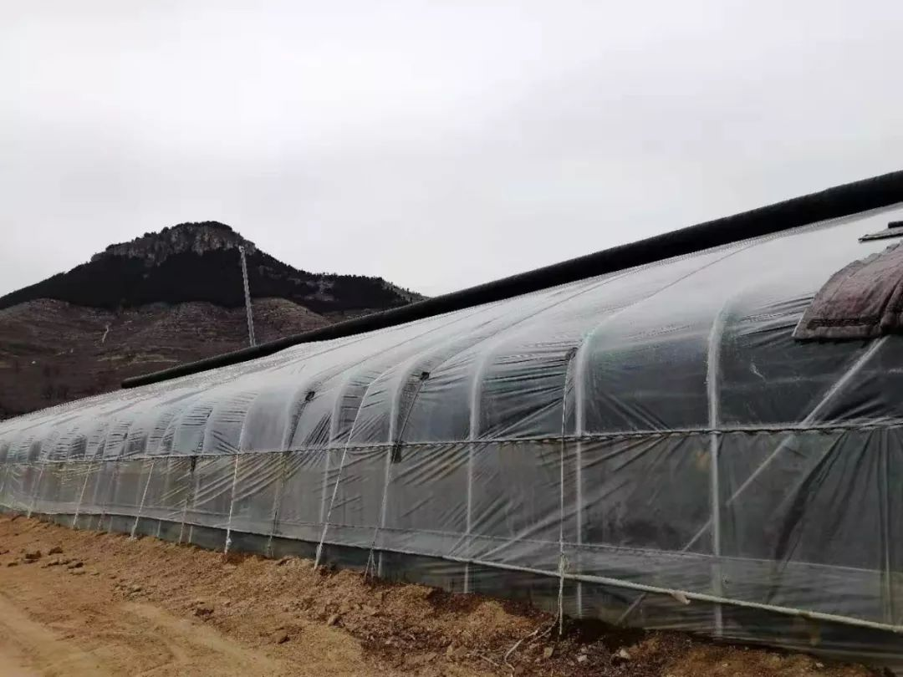
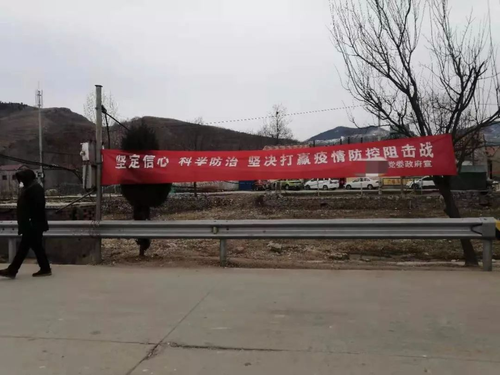
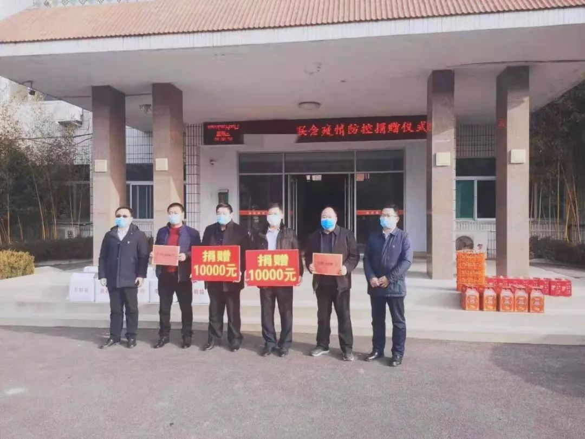

500万人离开武汉，我是其中之一 | 我的武汉日志
原文链接 备份链接 若干年后回望，这一定是一段值得铭记的日子。因为新型冠状病毒感染的肺炎疫情，许多家庭无法团圆。疫情数据地图的每次刷新都令人揪心。我们和千万武汉人在一起，这不只是一句安慰，因为没有人能够置身事外。 之前，我们向用户征集这 …

作者：张霞
来源：*商业人物*（ID：*biz-leaders）*
壹
2020年，王明发最后悔的事情是去年砍掉了一亩多地的大樱桃树，建了两个草莓大棚。
大樱桃是山东鲁中一带的“土称呼”，其实就是国产车厘子。我们村庄种植大樱桃已有十几年历史，最贵的时候，能卖到15、6块钱一斤，一亩地可有两万多块的收入。
2017、2018，接连两年的清明节期间，鲁中地区遇上了“倒春寒”，把正值开花季的樱桃花苞冻掉了一大半。等到收成时，樱桃的价格却并没攀升，王明发一年只收入了八千多块。
他算了一笔账，刨去肥料、农药、人工等成本，这一年，算是“白干了”。
没上过几天学的他，说不出“产业升级转型”之类的话，却认清了一个理儿：再种下去，就是死路一条——首先是竞争大，家家户户都种着同一种作物，客源却只几个外地客商，很容易被压价；其次，大樱桃的生产周期长，开花、授粉、落果的过程中经常遭遇意外，说白了，就是“靠天吃饭”。
到附近几个乡镇考察了一圈之后，2019年，王明发毅然决然的把地里的作物换成了前景更好的大棚草莓。
草莓生产周期短，产量高，农历八月份种上，三个月左右便能收成。冬季乡村的鲜果少，走亲访友、居家待客草莓都是稀罕物。按照往年的市场价格，春节期间，一斤草莓能卖到20块钱左右。
利润高，投入也就大。建温室大棚需要玻璃薄膜和专业PC板，一个需要投入四万多。为此，王明发到银行贷了三万块钱的款。

因材料贵，温室大棚造价颇高，一个需四万多元
想保证草莓的产量高，得用好的苗木。王明发特地去了一趟省城济南，雇车跑了两百多公里，运回来一万五千来颗上好的苗栽，花掉九千多。想要草莓的个头大，肥料也很关键，王明发用的是日本技术的“佳垦冲施肥”，一亩地又要三千多。

一亩地草莓的肥料钱大约为三千元左右
不负所望的是，草莓果然收成可人，个顶个又红又大。王明发推算，一株草莓整个周期可生产两斤左右，一万五千颗就是三万斤。不用两年就能收回成本了。
意外的是，草莓红了，疫情来了。
贰
疫情来了，我县各个村庄的的入口处，都设立了值班岗哨，禁止外村人员进入。王明发的草莓卖不动了。
我县自发的“封村”运动算是较晚的，大年初二开始。最初王明发不以为然，寻思不过“就是个形式”，再怎么着就没个走亲访友的了？等到了大年初三，试着去邻村看舅舅的他意识到了问题的严峻——不仅村口有人值班，从高速公路拐进村子的岔路口还堵上了石头和木材，他不得不提着一箱草莓和两箱牛奶原路返回。
等到了初四、初五，公路上基本上车辆绝迹，杳无人影了。我们村是一个几百口人的大村，每天本村人员或多或少能够来王明发处消费个三五斤。剩下的，他便通过电话和微信，和外村熟人联系。谁若有需求，他骑着电动车送至村口，“交接情报”一样隔着一个岗哨交接货物。


“封村”后的乡村马路上人车稀少
王明发的草莓是从农历十一月底开始售卖的，年前卖的是18、9块钱一斤。这十几天，为了促销，他先是把价格降到十块，后又降到八块。按照这形势下去，三万来斤草莓，至少要少卖三万块。
然而即便如此，这份“外卖”的生意也几乎要做到头了。
2月4号下午，王明发载着五斤草莓到白花峪村送货，在白花峪的桥头，亲眼看到这村一个嫁出去的姑娘回来过娘家，因不让进村，和值勤人员大吵大闹起来。最后村领导报了警。警车呼啸而来那一刻，王明发拿起草莓便掉头而去了。“过娘家都不行？何况是卖草莓这种小事儿？”他自嘲道。
不过在竞争对手陈美清眼中，王明发已经算是幸运了。
陈美清家里有一个塑料大棚，和王明发隔了不到一千米，因管理不善，草莓个头要小，产量也低。更让她一直懊悔不迭的是，年二十六起，她一家三口全部得了流感，在村卫生室打吊瓶，一颗草莓也没卖。
“偏偏就是最贵那两天病了。年初二好了，就变成十块钱了。”陈美清逢人就要唠叨。一棚的草莓她从年前到现在只卖出去不到五千块。
更致命的是，王明发和陈美清还有个共同的“敌人”，村里最大的种植户李华伦。李华伦共有四个草莓大棚，不像二者把大棚建到自家田地里，他在村子的马路旁承包了十亩地，垦出来，建成了一个采摘园，旁边还有小饭馆和停车位。这三户人家是附近几个村庄，唯一的草莓种植户，构成了竞争格局。
按说李华伦亏损更大，但十元一斤的降价潮是他先开启的，八块也是他领头。除此，他还向镇政府捐赠了五百斤，给各个村的疫情防控小组成员赠送了一百斤。荣获了表彰奖状一枚。

销售不动后，李华伦将五千块钱的草莓捐献给了镇政府（图为李华伦提供）
为此，王明发和陈美清找李华伦理论。李华伦双手一摊，劝他俩要拎得清。“个人有个人做生意的道道，我降价也是维护客户。现在，这情况，就是白送也得送啊，至少换个人情。”李华伦说。
叁
会过日子的王明发，最终也是没舍得送。
最近几天，每天他和妻子蹲在大棚里忙活，看到熟透且有发烂迹象的草莓便摘下来，先吃为敬。

王明发一家今年“吃够了”草莓
现年17岁，正在县城读职业技术学校的儿子，成了他们两口愤怒的对象。“平常香蕉、橙子花钱买着吃，换成自己的水果就不吃了？”王明发一天要冲着儿子叨叨三四次。逼迫他吃草莓。
王明发的老婆则把吃不下的草莓加上冰糖煮熟，装进玻璃瓶，放到院子里自行冷冻储存。期望等到了暖和天还能当作罐头吃。
忆苦思甜是王明发最爱做的事。现年54岁的王明发，自出生起便居住在我的家乡，山东鲁中地区南部的一个山村。村庄属丘陵地区，土地贫瘠，小麦和玉米产量不高。家中有共有四个兄弟姐妹的王明发，小时吃过野菜，吃过高粱。
“穷”这个字能被他讲述的绘声绘色。他告诉我，即使改革开放之后还是穷，一亩地能收五百多斤小麦，卖不到一千块钱。穷的时候，面不够吃，菜舍不得用油炒，他试过把馒头卷进煎饼里，两种主食一起吃，“好歹咬起来能软和些”。
最离奇的一个故事是，他曾穷到就着山野里捕来的蚂蚱喝酒。正喝着，停电了，蚂蚱掉到了桌子腿下面，他抹黑捡起来继续咂摸着喝。等来电一看，摸起来的是一根蚯蚓。
为了脱贫，王明发种过菜园，1997年之后又把菜园改成葡萄园，后来换成苹果园，樱桃园，直到现在的草莓大棚。收入越来越好，种葡萄的时候一亩地能有两三千，苹果上万，樱桃最多能到两三万。
王明发家有一儿一女。地里两三万块钱的收入，外加每逢秋天，当地商贩收购苹果，王明发老婆跟着前去打零工，负责苹果包装，也能赚个七八千。这已足够一个农村家庭一年的开销。
前前后后投入近十万，建两个草莓大棚，是王明发这辈子“赌”的最大的一次。据他说，他不得不“赌”，儿子再过五六年就到了成家的年纪，而县城的房价也早到了八千一平米。
目前，“赌”输了的王明发时而哀叹，时而乐观。他把这次疫情看作和冰雹、暴雨差不多的天灾，天灾往年他遇到过很多次，早就习以为常。克服克服就过去了，是他最近常说的话。
去年猪肉涨价，今年过年他家便没灌香肠。“吃鸡肉也挺好，有什么不能克服的？”他说。此外，他还庆幸，自家是小本买卖。电视里，还有网上，他看到过真正的大户，上百斤的水果往地里倒。“那才是真正的运气不好。还不是得克服？”
话音刚落，他又为银行利息肉疼，“一年快三千呢！”
更多时候，他还因为同村的人“心里来气”。
村里总有人来到他的大棚感叹两句，为他可惜。但乡村人的同情，很快就会回归现实。
替王明发感慨完了，乡亲们总会絮叨一句，“幸好不是下樱桃的时候（阳历五月份），要是那时候赶上疫情，樱桃肯定也不让卖了。”转头开始操心起自己地里的果树，为自己庆幸。
气不过的王明发最近几天从大瓦房里，搬进了草莓棚旁边的果园屋。因为是温室大棚，草莓棚内有二十多度，搬个马扎坐进去吃饭喝酒，很是舒适。比之北方农村时常零下的室内，要“享受不少”。
“草莓虽然卖不出去了，我好歹也住进了暖气房。”王明发自嘲道。
（以上人名皆为化名）
*文中图片为作者拍摄

推荐阅读


严正声明：“商业人物”所有原创文章，转载均须获授权。一切形式非法转载，包括但不限于盗转、未获“商业人物”授权通过第三方转载行为，均属侵权行为，“商业人物”将公布“黑名单”并追究法律责任。“商业人物”只愿与尊重知识产权的机构合作。
投稿、约访、合作，联系邮箱：bizleaders@qq.com
添加微信biz-leader，获转载授权或邀您加入商友群
1.长按右侧二维码即可关注***。*
2.期待您置顶与星标。欢迎分享与评论，欢迎通过留言或私信方式给我们提供选题线索。
3.点击“阅读原文”，看商业人物官网，获取更多精彩内容。**

原文链接 备份链接 若干年后回望，这一定是一段值得铭记的日子。因为新型冠状病毒感染的肺炎疫情，许多家庭无法团圆。疫情数据地图的每次刷新都令人揪心。我们和千万武汉人在一起，这不只是一句安慰，因为没有人能够置身事外。 之前，我们向用户征集这 …
原文链接 备份链接 *************▲*************2020年1月24日，除夕夜，武汉大学中南医院重症医学科的医护人员坚守岗位。在病房外的办公室里，他们简单地吃了一顿工作餐，当作年夜饭，随即换装上岗，继续奋战在抗击 …
原文链接 备份链接 在防控的前提下，推动各类生产企业复工复产，成为近日各地的着眼点。然而，疫情仍在肆虐，对众多中小微企业的影响也在逐渐体现。 为帮扶受疫情影响的中小企业，苏州、上海、北京、珠海等地都出台了相关帮扶举措。 2月2日，江苏省苏 …
原文链接 备份链接 作者 | 安然 编辑 | 康晓 出品｜深网·腾讯小满工作室 欢迎下载腾讯新闻APP，阅读更多优质资讯 _编者按：_跨越疫情经济周期，需要中国全行业上下游携手共度难关，深网推出《共克时艰》系列报道，是为第四篇，一位教育创 …
原文链接 备份链接 人畜共患病（Zoonosis）是现代社会的一种非常危险的新型传染病。这些病毒（菌）平时躲在动物体内，不断地进行基因突变和基因重组，伺机寻找入侵人类的机会。 科学界主流观点认为，新冠与非典的源头来自蝙蝠，两场疫情相似度 …